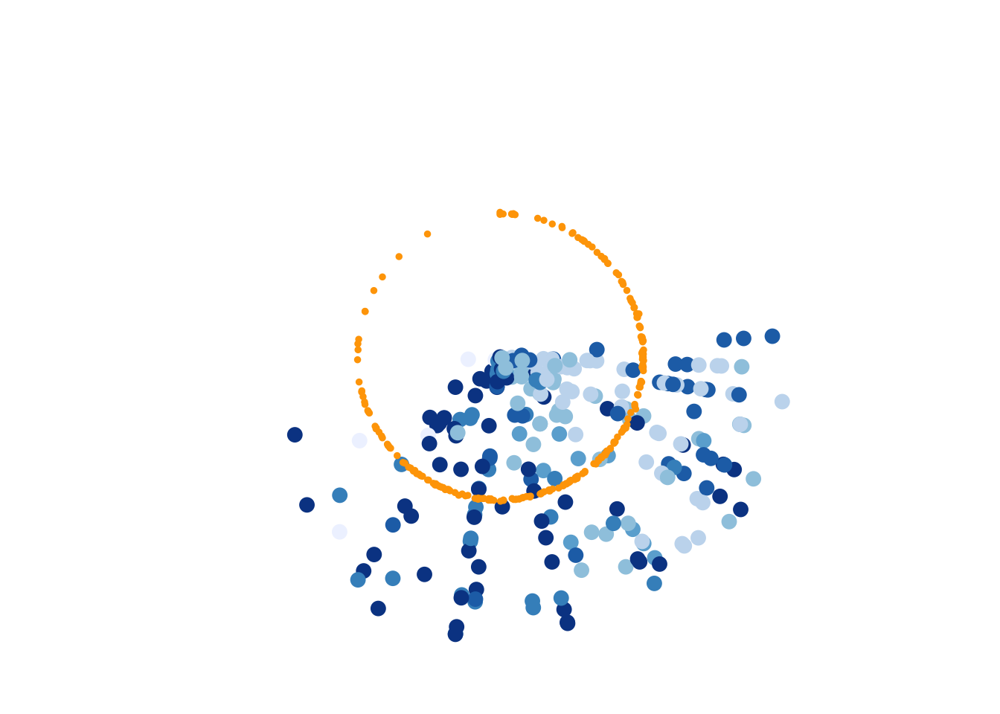
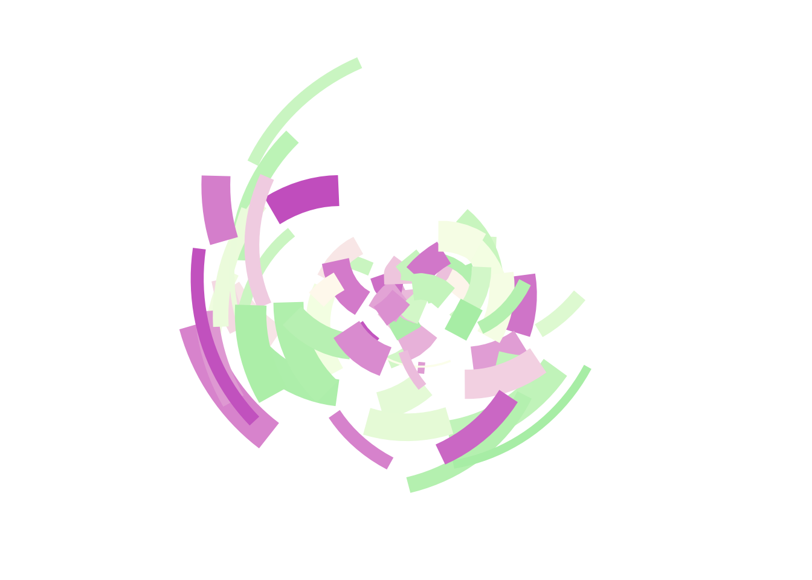

# load in packages
library(ggplot2)
library(tibble)Gen Art
GitHub Link: https://github.com/michaelppaull/art-from-code.git
Setup:
# inspect mpg data
mpg# A tibble: 234 × 11
manufacturer model displ year cyl trans drv cty hwy fl class
<chr> <chr> <dbl> <int> <int> <chr> <chr> <int> <int> <chr> <chr>
1 audi a4 1.8 1999 4 auto… f 18 29 p comp…
2 audi a4 1.8 1999 4 manu… f 21 29 p comp…
3 audi a4 2 2008 4 manu… f 20 31 p comp…
4 audi a4 2 2008 4 auto… f 21 30 p comp…
5 audi a4 2.8 1999 6 auto… f 16 26 p comp…
6 audi a4 2.8 1999 6 manu… f 18 26 p comp…
7 audi a4 3.1 2008 6 auto… f 18 27 p comp…
8 audi a4 quattro 1.8 1999 4 manu… 4 18 26 p comp…
9 audi a4 quattro 1.8 1999 4 auto… 4 16 25 p comp…
10 audi a4 quattro 2 2008 4 manu… 4 20 28 p comp…
# ℹ 224 more rowsExercises
Ex I:
mpg |>
ggplot(aes(displ, cty, colour = class)) +
geom_jitter(show.legend = FALSE, size = 3, width = 0, height = 1000) +
geom_jitter(show.legend = FALSE, size = 1, colour = "orange", width = 3.14159) +
coord_polar() +
theme_void() +
scale_color_brewer()
Ex II:
set.seed(1)
n <- 50
dat <- tibble(
x0 = runif(n),
y0 = runif(n),
x1 = x0 + runif(n, min = -.2, max = .2),
y1 = y0 + runif(n, min = -.2, max = .2),
shade = runif(n),
size = runif(n)
)
dat# A tibble: 50 × 6
x0 y0 x1 y1 shade size
<dbl> <dbl> <dbl> <dbl> <dbl> <dbl>
1 0.266 0.478 0.327 0.523 0.268 0.762
2 0.372 0.861 0.313 0.884 0.219 0.933
3 0.573 0.438 0.481 0.370 0.517 0.471
4 0.908 0.245 1.11 0.226 0.269 0.604
5 0.202 0.0707 0.255 0.0709 0.181 0.485
6 0.898 0.0995 0.784 -0.0282 0.519 0.109
7 0.945 0.316 0.796 0.328 0.563 0.248
8 0.661 0.519 0.652 0.349 0.129 0.499
9 0.629 0.662 0.799 0.573 0.256 0.373
10 0.0618 0.407 0.101 0.292 0.718 0.935
# ℹ 40 more rowspolar_art <- function(seed, n, palette) {
# set the state of the random number generator
set.seed(seed)
# data frame containing random values for
# aesthetics we might want to use in the art
dat <- tibble(
x0 = runif(n),
y0 = runif(n),
x1 = x0 + runif(n, min = -.2, max = .2),
y1 = y0 + runif(n, min = -.2, max = .2),
shade = runif(n),
size = runif(n)
)
# plot segments in various colours, using
# polar coordinates and a gradient palette
dat |>
ggplot(aes(
x = x0,
y = y0,
xend = x1,
yend = y1,
colour = shade,
size = size
)) +
geom_segment(show.legend = FALSE) +
coord_polar() +
scale_y_continuous(expand = c(0, 0)) +
scale_x_continuous(expand = c(0, 0)) +
scale_colour_gradientn(colours = palette) +
scale_size(range = c(0, 10)) +
theme_void()
}polar_art(seed = 2,
n = (70),
palette = c("#B4EEB4", "#FFFFF0", "#CD69C9")
)